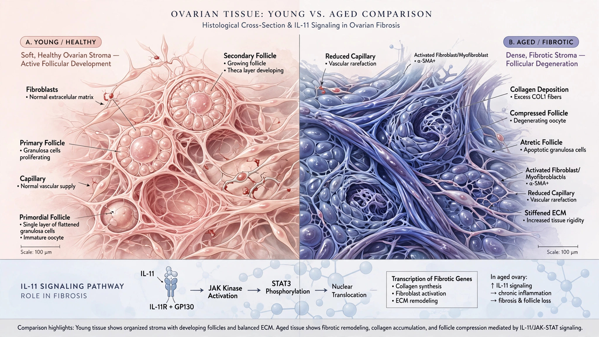

🧬 Longevity
Blocking One Protein Doubled Fertility in Aged Animals. IVF Charges Women $413,793 Per Baby After 42 to Route Around It.
A Nature Aging paper identifies IL-11 as the driver of ovarian fibrosis, shows that blocking it restores fertility in mice and rats, and a drug targeting the same molecule just entered Phase II human trials for fibrosis. Blocking this protein already extends mouse lifespan by 25%.

$413,793. That is what it costs, on average, to produce one live birth through IVF for a woman over 42 in the United States. Not per cycle — per baby. A woman under 35 pays $26,905 for the same outcome. A 15.4× cost escalation between two age brackets, the single most expensive failure mode in reproductive medicine. Until two weeks ago, the biological mechanism behind it was only partly understood.
On July 2, researchers at Huazhong University of Science and Technology published a paper in Nature Aging identifying interleukin-11 (IL-11) as the key driver of ovarian matrix stiffening: the physical hardening of ovarian tissue that chokes follicle development and crashes hormone production as women age. They blocked IL-11 in aged mice and rats. Damage reversed: ovarian stiffness dropped 35.7%, conception rates doubled, litter sizes in rats increased fivefold. One protein. Two landmark effects, and the same drug that extends mouse lifespan by a quarter is already in human testing.
This is the same molecule that, in a 2024 Nature paper by Stuart Cook at Duke-NUS, extended mouse lifespan by 25% when blocked — making it the first protein ever shown to independently improve both fertility and longevity in the same model organism. A drug targeting it, Boehringer Ingelheim's BI 765423, entered Phase IIa clinical trials for pulmonary fibrosis in January 2026.
What the Paper Shows
Wu et al. validated their findings across three species: IL-11 rises with age in the ovaries of mice, rats, and humans, a cross-species conservation not previously documented for this tissue. They measured stiffness in 107 human ovary samples using atomic force microscopy, and shear-wave elastography in clinical subjects showed the pattern vividly: 16 kPa in a 31-year-old, 30 kPa in a 41-year-old, nearly doubling in ten years.
In 36-week-old mice (roughly late 30s human equivalent), siRNA nanoparticles injected twice weekly for four weeks doubled conception rates from 25% to 50% and increased litter size from three pups to five. In rats, the effect was more dramatic: conception doubled from 20% to 50%, and litter size jumped from one pup to five. Not gene therapy, not permanent modification, just a temporary, reversible suppression of one protein.
Researchers confirmed that oocyte DNA integrity was unaffected, offspring showed no heritable genetic changes, and heterozygous IL-11 receptor knockout mice had completely normal fertility despite having only 50% of normal IL-11 signaling. Partial inhibition works. But complete IL-11 knockout paradoxically destroys fertility, so the therapeutic window is real but demands precision.
The IVF Age Tax
Fertility medicine's dirty secret hides in its success-rate tables: the cost per live birth does not scale linearly with age but explodes exponentially.
| Age | Success rate | Cycles to 1 birth | Cost per live birth |
|---|---|---|---|
| Under 35 | 44.6% | 2.2 | $26,905 |
| 35-37 | 31.5% | 3.2 | $38,095 |
| 38-40 | 19.9% | 5.0 | $60,301 |
| 41-42 | 9.7% | 10.3 | $123,711 |
| Over 42 | 2.9% | 34.5 | $413,793 |
These figures use SART data and a $12,000 base cycle cost, and they reveal a cost structure that no other area of medicine would tolerate without attempting a pharmacological intervention at the root cause.
Roughly 270,000 IVF cycles occur annually in the United States, about 30% involving women 38 and older, yielding an estimated 81,000 cycles for the cohort most affected by ovarian stiffening and approximately 10,500 live births at current success rates. If a drug shifted ovarian function by one age bracket, those same 81,000 cycles would produce an estimated 18,600 births: 8,100 additional babies from the same procedures and the same spending, with no new clinics, no new equipment, just softer ovaries.
At $15,000 fully loaded cost per cycle, the IVF system spends roughly $1.2 billion per year on women over 38 to produce those 10,500 births. Producing the same 10,500 births from a younger-functioning cohort would cost roughly $400 million. Less than a third. That gap is the age tax: approximately $800 million per year in excess US IVF spending alone, falling entirely on women whose only transgression is trying to have children after 38.
The Pipeline Nobody in Fertility Is Watching
In 2020, Boehringer Ingelheim acquired Enleofen Bio's anti-IL-11 platform for over $1 billion per product in milestone payments. Enleofen was co-founded by Cook, the same researcher behind the lifespan extension work, and Phase I showed favorable safety across a wide dose range before the Phase IIa pulmonary fibrosis trial launched in January 2026.
Nobody at Boehringer is talking about fertility. Not yet. Not publicly. Their roadmap targets fibrotic diseases of the lung, liver, kidney, and heart, but biology does not care about regulatory strategy. A $35.9 billion global fertility services market hit its 2024 peak and is projected to reach $80.1 billion by 2033, yet its biggest cost driver has never had a pharmacological intervention. Every solution to date has been a workaround: stimulate what remains, harvest early, or use someone else's eggs at $25,000-$45,000 per cycle.
What Could Go Wrong
Most mouse fertility findings fail in humans. Every one. That caveat is worth pausing on. Human tissue data in this study comes from women who had ovaries removed during cancer surgery, a population that may not generalize. Francesca Duncan at Northwestern pointed out the cancer-history limitation, the mice were 36 weeks old with active decline rather than established postmenopausal fibrosis, and the drug was delivered systemically when IL-11 acts in dozens of tissues. Duncan cautioned: "The safety bar to any drug targeting the ovary is incredibly high given that this tissue contains the egg cells that can give rise to the next generation."
A deeper counterargument: complete IL-11 deletion causes total infertility because IL-11 is essential for embryo implantation. Authors showed partial inhibition is safe, but the therapeutic window between softening ovaries and preventing implantation has never been tested in humans, and no FDA regulatory pathway exists for "fertility aging," meaning any reproductive application requires either a new billion-dollar trial or off-label physician adoption.
Beyond Fertility
Deletion of IL-11RA1 in mice preserved estrogen levels into old age. Declining estrogen during menopause drives osteoporosis ($19 billion per year in US treatment costs), cardiovascular disease, and is increasingly linked to Alzheimer's risk. Barbara Vanderhyden at the University of Ottawa told New Scientist: "Beyond preserving fertility, finding ways to prolong ovarian function could delay the health impacts of menopause." If anti-IL-11 therapy delays menopause by even two years for 30 million postmenopausal American women, the downstream healthcare savings would dwarf the entire fertility market.
The Bottom Line
IVF is a $10 billion US industry built on compensating for a tissue-level problem nobody could treat. Now someone can.
What you can do right now: if you are over 35 and considering IVF, this is not yet a reason to wait, because no human reproductive trial exists and the timeline to one is measured in years, not months. But if you are freezing eggs, the mechanism driving your ovarian decline now has a name, a drug target, and a pharmaceutical company spending over a billion dollars to block it. That is more than any other age-related fertility intervention has ever had behind it. For fertility clinics, the Wu et al. paper should be mandatory reading — your industry is built on the assumption that ovarian aging is irreversible, and if that assumption weakens, the $413,793-per-baby business model goes with it.